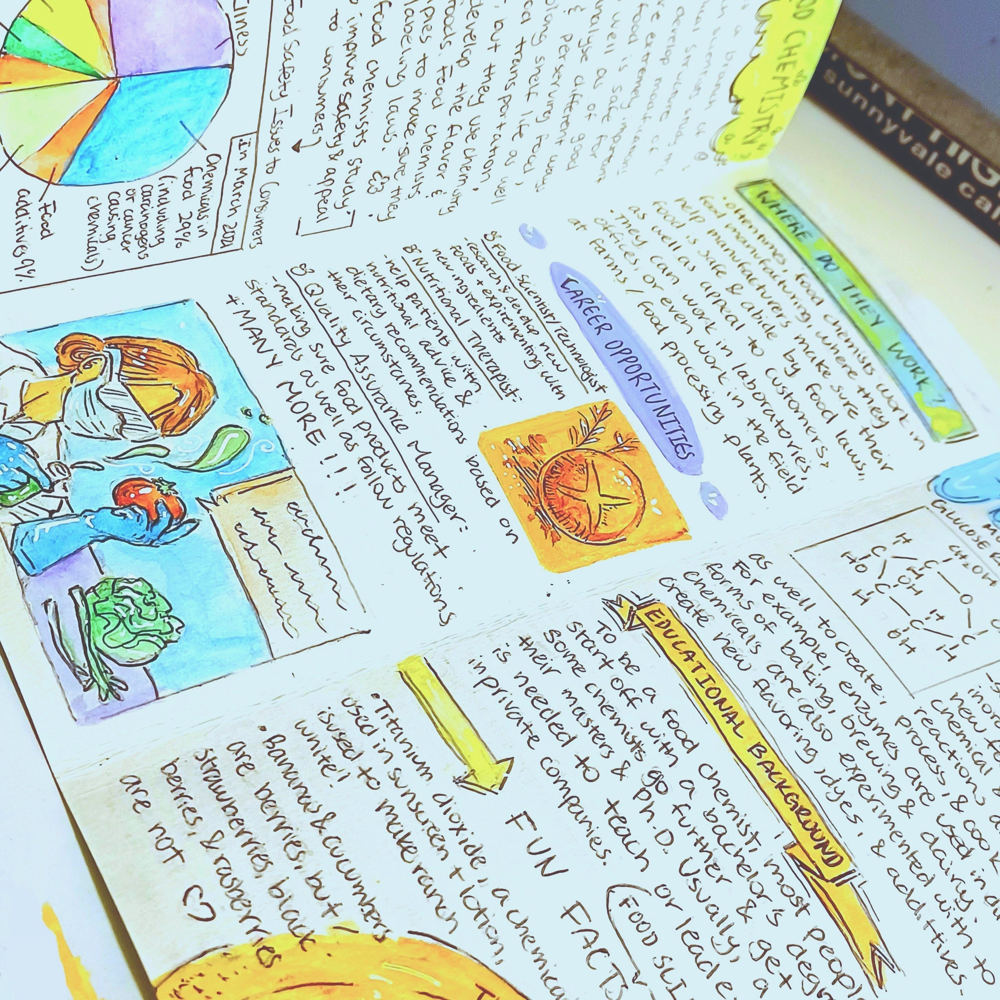
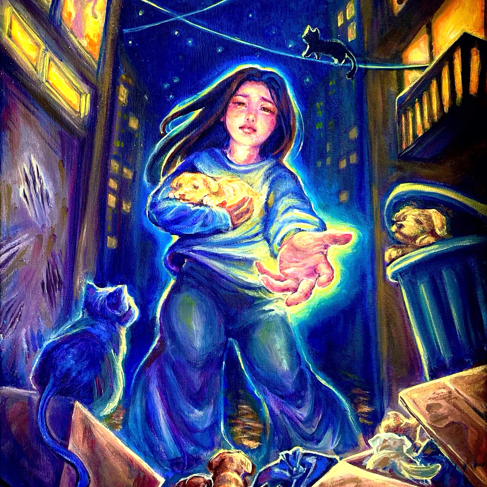

✧ Promotional/brand designs, including logos and posters, to help spread your message ✧

✧ Heartfelt artworks to work with non-profits in tackling important social issues ✧✧ Product and character designs tailored to our client's unique needs and missions ✧
☼ PURPOSE ☼
Artful Allies' goal is to use art and creativity as a form of connection. Not only does this mean helping clubs or businesses reach a wider audience with carefully crafted designs, Artful Allies also uses art to raise awareness for various social issues. Through expressing pain, happiness, and developing cohesive brands, art is used to bring people together in this way. Check out our Gallery section to view previous works!